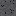
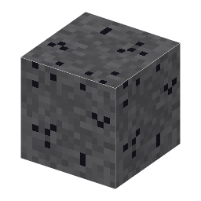

①子ども 地下深くにある、磁石になる鉄の鉱石。
③大人 縞状鉄鉱層は約25〜18億年前にできた。シアノバクテリア（光合成をする細菌）が出した酸素が、海に溶けていた鉄（Fe²⁺）を酸化して沈め、鉄の層と石英の層がしま模様に積もった。
④ガチ 磁鉄鉱の小さな結晶は生き物の体にもある。走磁性細菌は体の中に磁鉄鉱の粒を並べて方位磁針にしている。スウェーデンのキルナ鉱山のような大きな磁鉄鉱床の近くでは、方位磁針が狂う。
（作り方のレシピは無い：拾う・掘る・ほかの方法）
（このアイテムを使うレシピは無い）